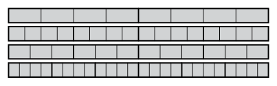

Common fractions
In this chapter you will learn more about fractions and what these numbers are used for. If we only use whole numbers we cannot always describe quantities precisely. Fractions were invented so that any quantity can be described accurately.
Equivalent fractions
Sharing chocolate in different ways

1. (a) John eats three quarters of a chocolate slab like this one above. How many small pieces of chocolate is that?
(b) How many small pieces are there in the whole slab of chocolate?
(c) Ratti eats 6 eighths of a chocolate slab like the one above. Who eats more, Ratti or John, or do they eat the same amount of chocolate? Explain your answer.
2. A slab of chocolate like the above one has to be shared fairly between 16 people. That means each person should get one sixteenth of the slab. How many small pieces of chocolate should each person get?
3. What fraction of the whole slab is one of the small pieces?
4. (a) Is it true that each person in question 2 should get 1 sixteenth of the slab?
(b) Is it true that each person in question 2 should get 3 forty-eighths of the slab?
(c) Is 1 sixteenth of the slab of chocolate precisely the same amount of chocolate as 3 forty-eighths of the slab?
5. How many forty-eighths of a slab will each person get in each of the following cases, if the slab is equally shared among the number of people indicated?
(a) between 2 people
(b) between 3 people
(c) between 4 people
(d) between 6 people
(e) between 8 people
(f) between 12 people
(g) between 16 people
(h) between 24 people
6. In each case below, state what the smaller parts of the grey strip may be called.
(a)

(b)
(c)

(d)

(e)

(f)
(g)
(h)

(i)
(j)

(k)
(l)

(m) 
7. (a) A whole slab of chocolate is divided equally between a number of people, and each person gets 1 eighth of the slab. How many people are there?
(b) How many people are there if each person gets 1 twelfth of the slab?
(c) How many people are there if each person gets 1 sixteenth of the slab?
8. If each small piece is 1 forty-eighth of a slab of chocolate, how many pieces are there in each of the following?
(a) 1 twelfth of a slab
(b) 1 eighth of a slab
(c) 1 third of a slab
(d) 1 twenty-fourth of a slab
(e) 1 sixth of a slab
(f) 1 sixteenth of a slab
9. If each small piece is 1 forty-eighth of a slab of chocolate, how many pieces are there in each of the following?
(a) 5 twelfths of a slab
(b) 3 eighths of a slab
(c) 2 thirds of a slab
(d) 17 twenty-fourths of a slab
(e) 5 sixths of a slab
(f) 13 sixteenths of a slab
10. In each of the following say which fraction of the slab gives you more chocolate, or whether the two quantities are the same. How do you know this?
(a) 5 sixths of a slab or 13 sixteenths of a slab
(b) 5 twelfths of a slab or 3 eighths of a slab
(c) 2 thirds of a slab or 17 twenty-fourths of a slab
11. (a) How many forty-eighths of a slab is 1 third of a slab and 1 eighth of a slab together?
(b) How much of a slab is 1 sixth of a slab and 3 eighths of a slab together?
(c) How much chocolate is 5 sixths of a slab and 7 eighths of a slab together?
12. (a) How many eighths of a slab is 18 forty-eighths of a slab? How did you work this out?
(b) How many sixths of a slab is 32 forty-eighths of a slab? How did you work this out?
Now here is a different slab of chocolate.
13. What fraction of the whole slab is each one of the small pieces?
14. How many sixtieths of the yellow 60-piece slab is each of the following?
(a) 1 fifth of the slab
(b) 1 twelfth of the slab
15. To answer question 14, you may just have counted the small pieces on the diagram. What calculations could you have done to find the answers for question 14?
16. How many sixtieths of the yellow 60-piece slab is each of the following?
(a) 1 twentieth of the slab
(b) 1 sixth of the slab
(c) 9 twentieths of the slab
17. In each case below, state which is more chocolate, or whether the two fractions of the slab are the same amount of chocolate. How do you know?
(a) 14 twentieths or 7 tenths
(b) 13 twentieths or 9 fifteenths
(c) 3 fifths or 7 twelfths
18. In each case below, work out how much of a slab is made up of the two parts together.
(a) 14 twentieths and 7 tenths. At the end, give your answer as a number of tenths.
(b) 13 twentieths and 9 fifteenths. Give your final answer as wholes and quarters.
(c) 3 fifths and 7 twelfths
Using fraction notation
Instead of writing 5 forty-eighths, we may write \(\frac{5}{48}\).This is called the common fraction notation.
The number 48 below the line is called the denominator and it shows that the whole was divided into 48 equal pieces, so each piece is 1 forty-eighth of the whole. The denominator shows the unit in which the number is expressed.
The number 5 above the line is called the numerator and it indicates the number of pieces.
A number that is made up of a whole number and a fraction, like 2 and 3 fifths, can be written as a mixed number : \(2\frac{3}{5}\)
1. Write each of the following numbers in fraction notation.
(a) 7 twentieths
(b) 3 and 5 eighths
(c) 2 and 7 ninths
(d) 1 and 7 tenths
2. Write each of the following numbers in words.
(a) \(\frac{23}{100}\)
(b) \(3\frac{5}{30}\)
(c)\(2\frac{5}{18}\)
(d)\(\frac{17}{25}\)
3. (a) The strip below is divided into five equal parts. What part of the whole strip is each of the five parts?

(b) If you divide each fifth into six smaller equal parts, how many smaller parts will there be altogether?
(c) What fraction of the whole strip is each of these smaller parts?
4. (a) The strip below is divided into 10 equal parts. What part of the whole strip is each of the 10 parts?
(b) If you divide each tenth into four smaller equal parts, how many smaller parts will there be altogether?
(c) What fraction of the whole strip is each of these smaller parts?
(d) If you divide each tenth into five smaller equal parts, how many smaller parts will there be altogether?
(e) What fraction of the whole strip is each of these smaller parts?
(f) If you divide each tenth into ten smaller equal parts, how many smaller parts will there be altogether?
(g) What fraction of the whole strip is each of these smaller parts?
5. (a) How many tenths make up one fifth?

You may use the diagram on the right to figure this out.
(b) How many fifteenths are there in one fifth?
(c) How many fifteenths are there in 3 fifths?
(d) How many twentieths are there in one fifth? If you need help with this, draw a diagram like those in questions 5(a) and (b) to help you. Your diagram need not be accurate.
(e) How many twentieths are there in one quarter?
(f) How many twentieths are there in 3 quarters?
(g) How many twentieths do you think will make up one tenth? If you need help, make marks on the diagram in question 5(a) to help you.
Your answers for question 5 can also be written in fraction notation. For example, your answer for 5(c) can be written as \(\frac{3}{5} = \frac{9}{15}\)
6. Write each of your other answers for question 5 in fraction notation.
7. In this question write the fractions in words. Decide whether each statement is true or false and give reasons for your answers.
(a) "\(\frac{15}{20}\) of the red strip below is longer than \(\frac{3}{4}\) of the strip"
(b) "\(\frac{9}{15}\) is a bigger number than \(\frac{3}{5}\)"
(c) "\(\frac{2}{3}\) is a smaller number than \(\frac{7}{12}\)"
The same number can be expressed in different units.
For example, the number \(\frac{3}{4}\) can be expressed in eighths as \(\frac{6}{8}\), in twentieths as \(\frac{15}{20}\), in sixtieths as \(\frac{45}{60}\) and in many onther units. \(\frac{3}{4},~\frac{6}{8},~\frac{15}{20},~\frac{45}{60}\) are all different ways of expressing the same number. Hence they are called equivalent fractions.
Equivalent fractions let us write the same number in different ways.
\(\frac{3}{4}=\frac{6}{8}=\frac{15}{20}=\frac{45}{60}\)
8. Write your answers in words and in fraction notation, and explain your answers.
(a) Express\(\frac{3}{8}\) in sixteenths and in fortieths.
(b) Express \(\frac{3}{5}\) in tenths, twentieths, fortieths and hundredths.
(c) Express\(\frac{7}{10}\) in fortieths, fiftieths and hundredths.
9. Consider the fraction 3 quarters. It can be written as \(\frac{3}{4}\).
(a) Multiply both the numerator and the denominator by 2 to form a "new" fraction. Is the "new" fraction equivalent to \(\frac{3}{4}\)? You may check on this diagram.

(b) Multiply both the numerator and the denominator of \(\frac{3}{4}\) by 3 to form a "new" fraction. Is the "new" fraction equivalent to \(\frac{3}{4}\)?
(c) Multiply both the numerator and the denominator of \(\frac{3}{4}\)by 4 to form a "new" fraction. Is the new fraction equivalent to \(\frac{3}{4}\)?
(d) Multiply both the numerator and the denominator of \(\frac{3}{4}\) by 6 to form a "new" fraction. Is the new fraction equivalent to \(\frac{3}{4}\)
\(\frac{15}{20}\) is equivalent \(\frac{3}{4}\) because there are 5 twentieths in 1 quarter, and so there are 15 twentieths in 3 quarters. \(\frac{9}{16}\) is not equivalent to \(\frac{3}{4}\) because there are 4 sixteenths in 1 quarter, so 3 quarters is 12 sixteenths, not 9 sixteenths.
10. Decide whether the two given numbers are equal or not. Explain your answer. If they are not equal, state which one is bigger and explain why you say so. You may first write the fractions in words if that helps you.
(a)\(\frac{5}{8}\) and \(\frac{3}{5}\) (Hint: express both numbers in fortieths)
(b) \(\frac{7}{10}\) and \(\frac{5}{8}\)
(c) \(\frac{4}{5}\) and \(\frac{7}{8}\)
Adding and subtracting fractions
To add or subtract fractions, all the fractions must be expressed in the same unit.
1. Calculate each of the following. The work that you did in question 10 on the previous page may help you.
(a) \(\frac{5}{8} + \frac{3}{5} =\)
(b) \(\frac{7}{10} + \frac{5}{8} = \)
(c) \(\frac{7}{10} + \frac{3}{8} = \)
(d) \(\frac{5}{8} - \frac{3}{5} =\)
(e) \(\frac{7}{10} - \frac{3}{8} = \)
(f) \(6 \times \frac{5}{8} = \) (which is \(\frac{5}{8} + \frac{5}{8} + \frac{5}{8}+\frac{5}{8}+\frac{5}{8}+\frac{5}{8}\))
(g) \(8 \times \frac{7}{10}\)
To compare, add or subtract fractions, for example \(\frac{5}{8}\) and \(\frac{3}{5}\), find a fraction unit in which both fractions can be expressed so that you can compare them. We call this a common denominator. The "product" of the two denominators is helpful to find such a unit. In this case, \(5 \times 8 = 40\). Since 1 eighth is 5 fortieths, \(\frac{5}{8}\) is 25 fortieths or \(\frac{25}{40}\). Since 1 fifth is 8 fortieths, \(\frac{3}{5}\) is 24 fortieths or\(\frac{24}{40}\). So, \(\frac{5}{8}\) is bigger than \(\frac{3}{5}\).
2. In each question explain why the two given numbers are equal or why they are not equal. If they are not equal, state which one is bigger and explain why you say so. You may first write the fractions in words if that will help you.
(a) \(\frac{5}{8}\) and \(\frac{2}{3}\)
(b) \(\frac{5}{6}\) and \(\frac{7}{8}\)
(c) \(\frac{3}{4}\) and \(\frac{4}{5}\)
(d) \(\frac{5}{12}\) and \(\frac{2}{3}\)
(e) \(\frac{7}{12}\) and \(\frac{3}{8}\)
(f) \(\frac{9}{20}\) and \(\frac{4}{15}\)
(g) \(\frac{3}{10}\) and \(\frac{1}{4}\)
(h) \(\frac{7}{10}\) and \(\frac{5}{8}\)
(i) \(\frac{9}{13}\) and \(\frac{11}{17}\)
3. Add the two fractions given in each part of question 2. Show how you work it out.
(a) \(\frac{5}{8} + \frac{2}{3}\)
(b) \(\frac{5}{6} + \frac{7}{8}\)
(c) \(\frac{3}{4} + \frac{4}{5}\)
(d) \(\frac{5}{12} + \frac{2}{3}\)
(e) \(\frac{7}{12} + \frac{3}{8}\)
(f) \(\frac{9}{20} + \frac{4}{15}\)
(g) \(\frac{3}{10} + \frac{1}{4}\)
(h) \(\frac{7}{10} + \frac{5}{8}\)
(i) \(\frac{9}{13} + \frac{11}{17}\)
4. Now subtract the smaller number from the bigger number in each part of question 2.
(a) \(\frac{2}{3} - \frac{5}{8}\)
(b) \(\frac{7}{8} - \frac{5}{6} \)
(c) \( \frac{4}{5} - \frac{3}{4}\)
(d) \(\frac{2}{3} - \frac{5}{12}\)
(e) \(\frac{7}{12} - \frac{3}{8}\)
(f) \(\frac{9}{20} - \frac{4}{15}\)
(g) \(\frac{3}{10} - \frac{1}{4}\)
(h) \(\frac{7}{10} - \frac{5}{8}\)
(i) \(\frac{9}{13} - \frac{11}{17}\)
5. Calculate each of the following.
(a) \(3\frac{2}{3} - 1\frac{5}{6}\)
(b) 5\(\frac{6}{7} + \frac{3}{8} \)
(c) \( 12\frac{5}{8} + 7\frac{4}{9}\)
(d) \(4\frac{5}{12} - 2\frac{3}{10}\)
(e) \(1\frac{3}{10} - \frac{2}{3}\)
(f) \(2\frac{7}{15} - 1\frac{3}{8}\)
(g) \(\frac{7}{8} + \frac{7}{8} + \frac{7}{8}+ \frac{7}{8}+ \frac{7}{8}\)
(h) \(\frac{7}{8}+ \frac{7}{8}+ \frac{7}{8}+ \frac{7}{8}+ \frac{7}{8}+ \frac{7}{8}+ \frac{7}{8}+ \frac{7}{8}\)
(i)\( \frac{7}{8}+ \frac{7}{8}+ \frac{7}{8}+ \frac{7}{8}+ \frac{7}{8}+ \frac{7}{8}+ \frac{7}{8}+ \frac{7}{8} + \frac{7}{8} + \frac{7}{8} + \frac{7}{8}+ \frac{7}{8}+ \frac{7}{8}\)
(j) \(2\frac{4}{12} + 2\frac{4}{12} + 2\frac{4}{12} + 2\frac{4}{12} + 2\frac{4}{12} + 2\frac{4}{12} + 2\frac{4}{12} + 2\frac{4}{12}\)
Tenths and hundredths and thousandths
A useful family of fraction units
1. (a) Shade 3 tenths of the strip below.

(b) Into how many smaller parts is each tenth of the above strip divided?
(c) How many of these smaller parts are there in the whole strip?
(d) What is each of these smaller parts called?
(e) How many hundredths make up 2 fifths of the strip?
(f) How many hundredths make up 1 quarter of the strip?
(g) Shade 37 hundredths of the strip below.

2. Express each of the following numbers as a number of hundredths, and write your answers in fraction notation.
(a) 4 fifths
(b) 1 twentieth
(c) 7 twentieths
(d) 1 twenty-fifth
(e) 17 twenty-fifths
(f) 7 fiftieths
Because 1 twentieth is 5 hundredths, 7 twentieths is 35 hundredths.
This can also be expressed in fraction notation: \(\frac{35}{100} = \frac{7}{20}\).
\(\frac{7}{20}\) is called the simplest form of \(\frac{35}{100}\) because \(\frac{35}{100}\) cannot be expressed with a smaller
numerator than 7.
3. Express each of the following fractions in its simplest form.
(a) \(\frac{75}{100}\)
(b) \(\frac{60}{100}\)
(c) \(\frac{65}{100}\)
(d) \(\frac{90}{100}\)
4. Calculate each of the following, and express your answer in its simplest form.
(a) \(\frac{3}{25}+ \frac{4}{20}\)
(b) \(\frac{6}{25}+ \frac{6}{20}\)
(c) \(\frac{7}{100}+ \frac{9}{200}\)
5. (a) How much is \(\frac{1}{100}\) of R400?
(b) How much is \(\frac{7}{100}\) of R250?
(c) How much is \(\frac{25}{100}\) of R600?
(d) How much is \(\frac{1}{4}\) of R600?
(e) How much is \(\frac{40}{100}\) of R700?
(f) How much is \(\frac{2}{5}\) of R700?
Instead of writing \(\frac{40}{100}\) of R700, we may write \(\frac{40}{100} \times \text{R}700\)
6. Explain why your answers for questions 5(e) and 5(f) are the same.
Another word for hundredth is per cent.
Instead of saying
Miriam received 32 hundredths of the prize money,
we can say
Miriam received 32 per cent of the prize money.
The symbol for per cent is %.
7. How much is 80% of each of the following?
(a) R900
(b) R650
(c) R250
(d) R3 400
8. How much is 8% of each of the amounts in 7(a), (b), (c) and (d)?
9. How much is 15% of each of the amounts in 7(a), (b), (c) and (d)?

The above strip is divided into hundredths.
Imagine that each of the hundredths is divided into 10 equal parts (they will be almost impossible to see).
10. (a) How many of these very small parts will there be in the whole strip?
(b) What could each of these very small parts be called?
11. How much is each of the following?
(a) one tenth of R6 000
(b) one hundredth of R6 000
(c) one thousandth of R6 000
(d) ten hundredths of R6 000
(e) 100 thousandths of R6 000
(f) 7 hundredths of R6 000
(g) 70 thousandths of R6 000
(h) one ten thousandth of R6 000
12. Calculate.
(a) \(\frac{3}{10} + \frac{5}{8}\)
(b) \(3\frac{3}{10} + 2\frac{4}{5}\)
(c) \(\frac{3}{10} + \frac{7}{100}\)
(d) \(\frac{3}{10} + \frac{70}{100}\)
(e) \(\frac{3}{10} + \frac{7}{1000}\)
(f) \(\frac{3}{10} + \frac{70}{1000}\)
13. Calculate.
(a) \(\frac{3}{10} + \frac{7}{100} + \frac{4}{1000}\)
(b) \(\frac{3}{10} + \frac{70}{100} + \frac{400}{1000}\)
(c) \(\frac{6}{10} + \frac{20}{100} + \frac{700}{1000}\)
(d) \(\frac{2}{10} + \frac{5}{100} + \frac{4}{1000}\)
14. In each case investigate whether the statement is true or not, and give reasons for your decision.
(a) \(\frac{1}{10} + \frac{23}{100} + \frac{346}{1000} = \frac{6}{10} + \frac{3}{100} + \frac{46}{1000} \)
(b) \(\frac{1}{10} + \frac{23}{100} + \frac{346}{1000} = \frac{7}{10} + \frac{2}{100} + \frac{46}{1000} \)
(c) \(\frac{1}{10} + \frac{23}{100} + \frac{346}{1000} = \frac{6}{10} + \frac{7}{100} + \frac{6}{1000} \)
(d)\(\frac{676}{1000} = \frac{6}{10} + \frac{7}{100} + \frac{6}{1000} \)
Fraction of a fraction
Calculate parts of wholes and parts of parts
To calculate \(\frac{7}{20} \) (7 twentieths) of R500 you can first calculate 1 twentieth, and then
multiply by 7:
1 twentieth of R500 is \(\text{R}500 \div 20 = \text{R}25\), so \(\frac{7}{20} \) of R500 is \(7 \times \text{R}25 = \text{R175}.\)
\(\frac{7}{20} \) of \(500\) is the same as
\(\frac{7}{20} \times 500\) .
This means that to calculate \(\frac{7}{20} \) of R500 you work out \((500 \div 20) \times 7\). You divide by the denominator and then multiply by the numerator.
1. Calculate each of the following.
(a) \(\frac{9}{25}\) of R500
(b) \(\frac{9}{20}\) of R500
(c) \(\frac{9}{125}\) of R500
2. A small choir of 8 members won the second prize in a competition and they received 2 fifths of the total prize money. They shared the money equally between themselves. The total prize money was R1 000. How much prize money did each member of the choir get?
3. (a) How much is \(\frac{7}{8}\) of 400?
(b) How much is \(\frac{2}{5}\) of your answer for (a)?
(c) How much is \(\frac{7}{20}\) of 400?
4. Here is Nathi's answer to question 2:
1 fifth of R1 000 is R200, so 2 fifths is R400. So the choir team received R400 in total. Each member received 1 eighth of the R400, which is \(\text{R}400 \div 8 = \text{R}50\).
(a) Compare your own answers to Nathi's answers. If they are different, work them out again and find out who is right.
(b) Check whether you agree that \(\frac{1}{20}\) of R1 000 is R50.
(c) Try to explain why the answer for question 2 is the same as \(\frac{1}{20}\) of R1 000.
5. Do the following for the numbers 80, 180, 260, 360 and 2 400. Do your work in the table given below.
(a) How much is \(\frac{3}{4}\) of each of the numbers?
(b) How much is \(\frac{2}{5}\) of each of your answers for (a)?
(c) How much is \(\frac{6}{20}\) of each of the numbers?
|
number |
80 |
180 |
260 |
360 |
2 400 |
|
\(\frac{3}{4}\) of the number |
|||||
|
\(\frac{2}{5}\) of the answer |
|||||
|
\(\frac{6}{20}\) of the number |
6. Use your answers for question 5 to answer the following questions.
(a) How much is \(\frac{3}{4}\) of \(\frac{2}{5}\) of R80?
(b) How much is \(\frac{3}{4}\) of \(\frac{2}{5}\) of R180?
(c) How much is \(\frac{3}{4}\) of \(\frac{2}{5}\) of R260?
(d) How much is \(\frac{3}{4}\) of \(\frac{2}{5}\) of R360?
(e) How much is \(\frac{3}{4}\) of \(\frac{2}{5}\) of R2 400?
7. To calculate \(\frac{3}{4}\) of \(\frac{2}{5}\) of a number you did this: the number \(\div 4 \times 3 \div 5 \times 2\).
(a) Investigate whether the number \(\times 3 \times 2 \div 5 \div 4\) will give the same results as the number \(\div 4 \times 3 \div 5 \times 2\), for the numbers in question 5 or any other numbers you may choose.
(b) Investigate whether the number \(\times 6 \div 20\) will give the same results asthe number \(\times 3 \times 2 \div 5 \div 4\).
(c) Investigate whether the number \(\times 3 \div 10\) will give the same results as the number \(\times 6 \div 20\).
Instead of \(\frac{3}{4}\) of \(\frac{2}{5}\) we may write \(\frac{3}{4} \times \frac{2}{5}\).
\(\frac{3}{4} \times \frac{2}{5} = \frac{3\times 2}{4\times 5}\)
To multiply by a mixed number like \(2\frac{7}{8}\), it is good practice to express the whole number
part in the same fraction units as the fraction part, for example:
2 wholes is 16 eighths, so \(2\frac{7}{8}\) is \(\frac{16}{8} + \frac{7}{8} = \frac{23}{8}\).
8. Calculate each of the following.
(a) \(\frac{3}{10} \times \frac{12}{25}\)
(b) \(\frac{5}{18} \times \frac{4}{35}\)
(c) \((\frac{1}{3}+\frac{1}{2}) \times \frac{6}{7}\)
(d) \(\frac{2}{3} \times \frac{1}{2} \times \frac{3}{4}\)
(e) \(2\frac{3}{5} \times \frac{5}{6}\)
(f) \(2\frac{3}{4} \times 3\frac{2}{5}\)
(g)\(2\frac{2}{3} \times 2\frac{2}{3}\)
(h)\(8\frac{2}{5} \times 3\frac{1}{3}\)
(i) \(\frac{6}{7} \times (\frac{1}{3}+\frac{1}{2})\)
(j) \(\frac{6}{7} \times \frac{1}{3}+ \frac{6}{7} \times \frac{1}{2}\)
(k) \(\frac{6}{7} \times (\frac{1}{2}-\frac{1}{3})\)
(l) \(\frac{6}{7} \times \frac{1}{2} - \frac{6}{7} \times \frac{1}{3}\)
(m) \((\frac{5}{6}+\frac{2}{3}) \times \frac{1}{5}\)
(n) \(\frac{5}{6} \times \frac{1}{5} + \frac{2}{3} \times \frac{1}{5}\)
(o) \(\frac{3}{4} - \frac{2}{5} \times \frac{5}{6}\)
(p) \(\frac{7}{8} \times (\frac{4}{7}+\frac{2}{5})\)
Squares and cubes and roots of fractions
1. Calculate.
(a) \(\frac{3}{10} \times \frac{3}{10}\)
(b) \(\frac{3}{10} \times \frac{3}{10} \times \frac{3}{10}\)
(c) \((\frac{3}{5})^2\)
(d) \((\frac{5}{9})^2\)
(e) \((\frac{3}{5})^3\)
(f) \((\frac{1}{4})^2\)
(g) \((\frac{1}{4})^3\)
(h) \((\frac{4}{7})^2\)
(i) \((\frac{5}{8})^3\)
(j)\((\frac{5}{8})^2\)
(k) \((\frac{5}{12})^3\)
(l) \((\frac{5}{12})^2\)
2. What number multiplied by itself will give \(\frac{9}{16}\)?
This number is called the square root of \(\frac{9}{16}\). It can be written as \(\sqrt{\frac{9}{16}}\).
3. Find each of the following. In some cases, your answers to question 1 will help you.
(a) \(\sqrt{\frac{4}{9}}\)
(b) \(\sqrt[3]{\frac{27}{64}}\)
(c) \(\sqrt{\frac{25}{81}}\)
(d) \(\sqrt[3]{\frac{125}{343}}\)
(e) \(\sqrt{\frac{25}{36}}\)
(f) \(\sqrt[3]{\frac{125}{216}}\)
(g) \(\sqrt{\frac{9}{100}}\)
(h) \(\sqrt[3]{\frac{27}{1000}}\)
Division by a fraction
Serving juice
Jamie pours juice from bottles into glasses.

He uses three quarters of a bottle of juice to fill one glass.

1. How many bottles will Jamie need to fill 10 glasses?
2. How many bottles will Jamie need to fill 30 glasses?
3. How many bottles will Jamie need to fill 100 glasses?
4. How many bottles will Jamie need to fill 180 glasses?
5. How many bottles will Jamie need to fill 37 glasses?
6. How many glasses can Jamie fill from 20 full bottles of juice?
7. How many glasses can Jamie fill from 36 full bottles of juice?
On another day Jamie uses different size glasses. He needs 5 eighths of a bottle of juice to fill one of these glasses.
8. How many bottles of juice does Jamie need to fill 50 of these glasses?
9. How many of these glasses can Jamie fill from 25 full bottles of juice?
Jamie changes glasses again. For the new glasses, he needs \(\frac{7}{10}\) of a full bottle of juice to fill one glass.
10. How many bottles of juice does Jamie need to fill 44 of these glasses?
11. How many of these glasses can Jamie fill from 25 full bottles of juice?
12. How many glasses can Jamie fill from 36 full bottles of juice if he needs three-quarters of a bottle to fill one glass?
Doing the juice calculations more quickly
1. Ria has R850 and chickens cost R67 each. What operation does she need to do to work out how many chickens she can buy?
2. Jamie has 16 bottles of juice and needs 3 quarters \((\frac{3}{4})\) of a bottle to fill one glass.
(a) How many quarters of a bottle of juice are there in 16 full bottles?
(b) How many glasses can he fill with these quarters?
In question 2 you have worked out how many glasses, each taking \(\frac{3}{4}\) of a bottle, can be filled from 16 bottles. You did this by first working out the total number of quarters in 16 bottles, and then dividing by 3 to find out how many glasses can be filled.
Do questions 3 and 4 in the same way.
3. Jamie has 20 bottles of juice and needs 5 eighths of a bottle to fill one glass. To work out how many glasses he can fill, he needs to work out 20 divided by \(\frac{5}{8}\). Work in the same way you did for question 2 to find out.
4. Jamie has 25 bottles of juice and needs \(\frac{3}{5}\) of a bottle to fill one glass. How many glasses can he fill?
In questions 2, 3 and 4 you have actually done the following calculations:
In question 2 you have calculated \(16 \div \frac{3}{4}\), by doing \(16 \times 4 \div 3\).
In question 3 you have calculated \(20 \div \frac{5}{8}\), by doing \(20 \times 8 \div 5\).
In question 4 you have calculated \(25 \div \frac{3}{5}\), by doing \(25 \times 5 \div 3\).
To divide by a fraction, you multiply by the denominator and divide by the numerator.
5. Calculate each of the following.
(a) \(9 \div \frac{2}{3}\)
(b) \(12 \div \frac{3}{8}\)
(c) \(15 \div \frac{7}{10}\)
(d) \(2 \div \frac{3}{20}\)
(e) \(20 \div \frac{7}{12}\)
(f) \(120 \div 3\frac{3}{5}\)
6. Calculate each of the following.
(a) \(9 \times \frac{3}{2}\)
(b) \(12 \times \frac{8}{3}\)
(c) \(15 \times \frac{10}{7}\)
(d) \(2 \times \frac{20}{3}\)
(e) \(20 \times \frac{12}{7}\)
(f) \(120 \times \frac{5}{18}\)
7. What do you notice about your answers for questions 5 and 6?
To divide by a fraction, we may turn the fraction around and multiply!
For example, \(15 \div \frac{7}{10}= 15 \times \frac{10}{7}\)
\(\frac{10}{7}\) is the reciprocal (also called the multiplicative inverse) of \(\frac{7}{10}\).
Division is the inverse of multiplication.
The method of dividing by multiplying by the reciprocal also works when a fraction is
divided by a fraction. For example \(\frac{5}{18} \div \frac{7}{10}\) can be calculated by doing \(\frac{5}{18} \times \frac{10}{7}\).
8. Calculate each of the following.
(a) \(\frac{7}{10} \div \frac{3}{20}\)
(b) \(\frac{9}{10} \div \frac{3}{18}\)
(c) \(\frac{17}{20} \div \frac{2}{7}\)
(d) \(2\frac{7}{20} \div \frac{3}{5}\)
(e) \(4\frac{7}{8} \div \frac{2}{3}\)
(f) \(5\frac{7}{8} \div 2 \frac{3}{5}\)